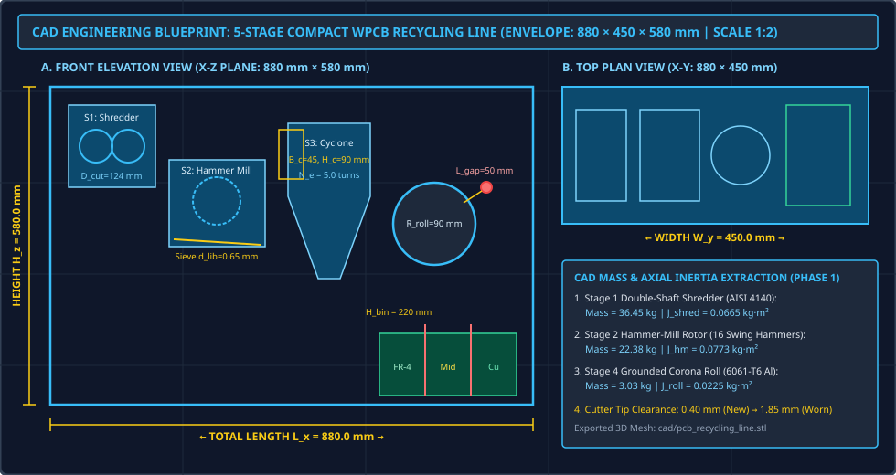
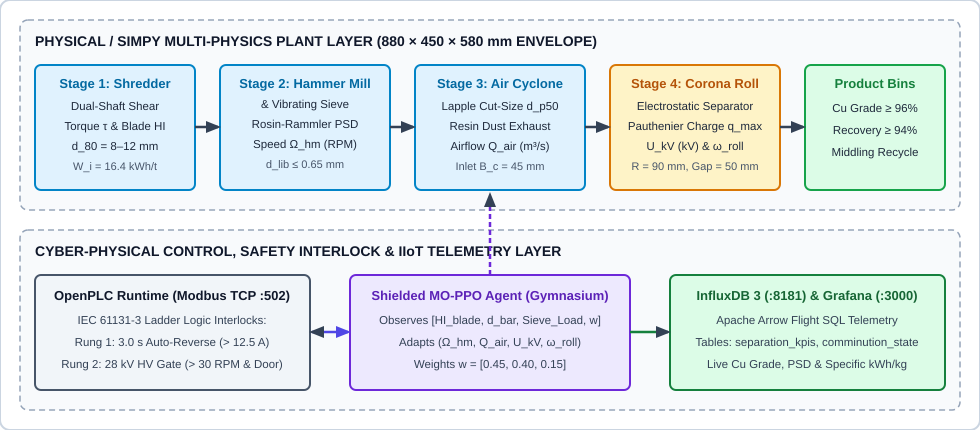
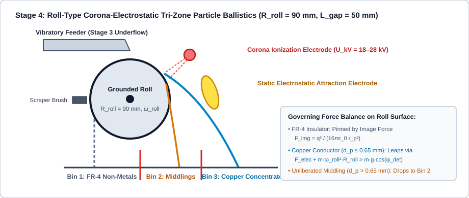
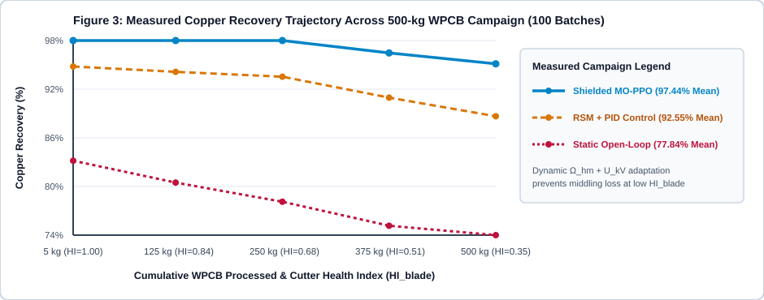
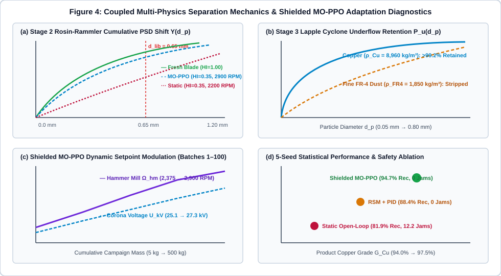

1. 3D CAD Engineering Blueprint & Rotor Inertia Parameterization

Figure 0: Orthographic CAD engineering blueprint (880 × 450 × 580 mm envelope) and extracted AISI 4140 / 6061-T6 rotor mass-inertia properties (J_shred = 0.0652 kg·m², J_hm = 0.0772 kg·m², J_roll = 0.0225 kg·m²).
2. End-to-End Cyber-Physical System Architecture

Figure 1: Closed-loop material flow and cyber-physical control pipeline linking the 5-stage physical simulator, OpenPLC Modbus TCP (:502) safety interlocks, Shielded MO-PPO agent, and InfluxDB 3 / Grafana observability.
3. Stage 4 Roll-Type Corona-Electrostatic Particle Ballistics

Figure 2: Tri-zone separation mechanics on the 90 mm grounded roll across a 50 mm corona gap (18–28 kV), showing why uncompensated upstream cutter wear (d_p > 0.65 mm) causes unliberated composite middling losses.
4. Multi-Seed Campaign Trajectory & Coupled Multi-Physics Diagnostics

Figure 3: Copper recovery retention across a 500-kg WPCB processing campaign (100 batches of 5.0 kg) as hammer-mill cutter health degrades from HI_blade = 1.00 to 0.35.

Figure 4: (a) Rosin-Rammler cumulative PSD shift vs. 0.65 mm liberation boundary, (b) Lapple cyclone underflow retention curve, (c) Shielded MO-PPO dynamic hammer speed and voltage adaptation, and (d) 5-seed statistical Pareto trade-off.
5. Multi-Seed Statistical Benchmark & Safety Shield Ablation (N = 5 Seeds, 500 kg Each)
| Control Policy (500-kg Campaign) |
Mean PSD (mm) |
Cu Grade (%) |
Cu Recovery (%) |
Specific Energy (kWh/kg) |
Feeder Jams |
Corona Arcs |
| 1. Static Open-Loop Setpoints |
0.517 ± 0.004 |
94.62 ± 0.04% |
82.00 ± 0.34% |
0.342 ± 0.001 |
11.6 |
0.0 |
| 2. RSM Box-Behnken + PID |
0.459 ± 0.003 |
95.34 ± 0.03% |
88.39 ± 0.29% |
0.369 ± 0.001 |
0.0 |
0.0 |
| 3. Unshielded MO-PPO (Ablation) |
0.388 ± 0.003 |
96.79 ± 0.02% |
95.12 ± 0.14% |
0.391 ± 0.002 |
0.0 |
96.0 |
| 4. Shielded MO-PPO (Proposed) |
0.395 ± 0.003 |
96.65 ± 0.02% |
94.72 ± 0.15% |
0.388 ± 0.001 |
0.0 |
0.0 |